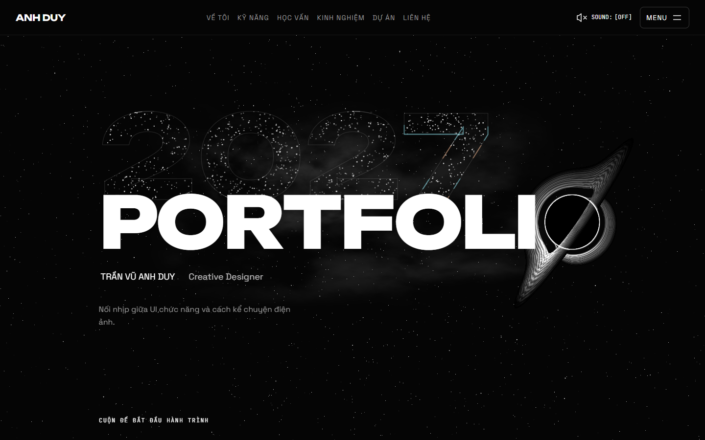

Ảnh từ cùng bản tích hợp V3. Chọn một mốc để so hai hướng cuộn; các ảnh này là checkpoint tĩnh, không phải video hoặc phép đo FPS. Mở bản chạy thật để xem nhịp chuyển động bằng cuộn.

390px là viewport trên desktop; chưa kiểm điện thoại thật. Chỉ xin duyệt Hero, O, glitch và portal; các section khác chưa thực hiện V5/V6/V7.